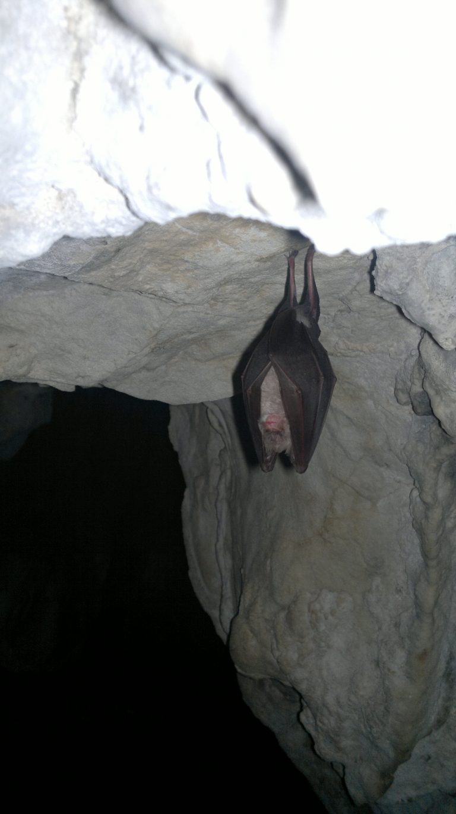
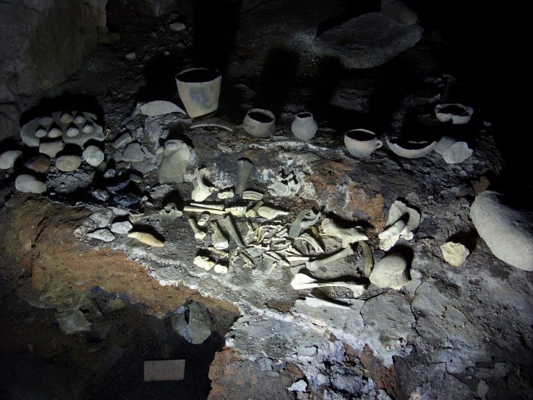
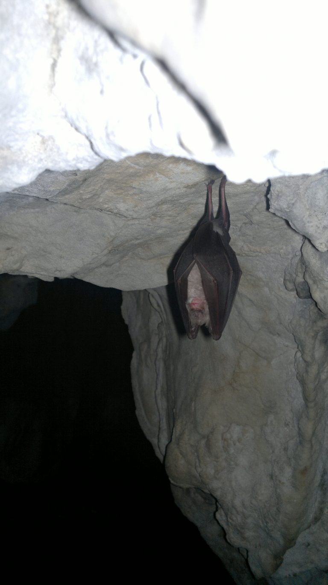
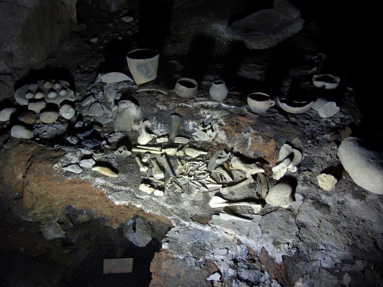
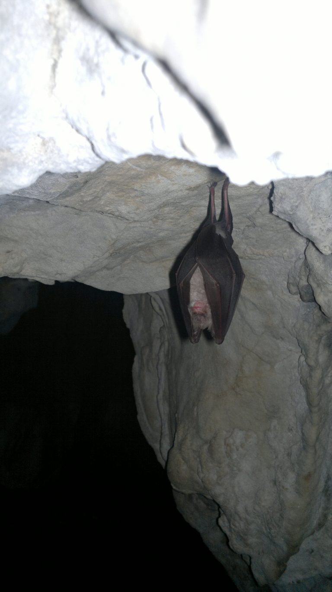
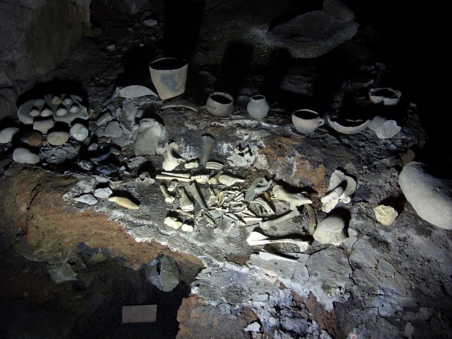

Ягодинската пещера е перлата в пещерния свят на България. Проучванията на пещерата започват през 1965 от спелеоклуб „Студенец“ – гр. Чепеларе с ръководител Димитър Райчев. В състава на експедицията са включени и 9-ма младежи от клуба. В продължение на 12 дни се правят археологически сондажни проучвания в привходната част/ Преддверието/ на пещерата. Извършва се картографиране на първия етаж и проникване във втория етаж. По време на тази експедиция са отрити интересни археологически находки, което дава повод да проведат още три специализирани експедиции. Успоредно с археологическите проучвания се извършват специализирани спелеоложки изследвания ката картографиране на втория етаж, микроклиматични и биоспелеоложки изследвания. В резултат на експедициите, първоначално са проучени 8500 метра от пещерата. През 1982-1986 се извършва повторно картографиране на пещерата и се откриват нови галерии и участъци като дължината й достига 10500 метра. Прокопани са два изкуствени тунела /сегашните вход и изход/. Пещерата е благоустроена и трети етаж е отворен за посетители. На 4 метра след естествения вход на пещерата (първо ниво) е открито Енеолитно жилище – местен керамичен център, единствено в Европа, запазено в естествения си вид.
Ягодинска пещера отстои на 20 км южно от Девин и на 3 км югозападно от село Ягодина. Разположена е на десния бряг на река Буйновска (началото на река Въча), която е оформила и най-дългото и живописно ждрело в България – Буйновско с дължина 7 км. До пещерата се стига по шосето Девин – Доспат, като се завива вляво при стената на язовир Тешел. Поради това, че пътят от Тешел до пещерата е еднолентов и над 35 местни автобуси не могат да се придвижват. Ягодинската пещера /Имамова дупка/ е наречена на близкото село, намиращо се до нея – с. Ягодина обл. Смолян. По своята морфология тя е многоетажна, лабиринтна пещера. Дълга е 10,5 км /третата по дължина в България и най-дългата в Родопите/ и е разположена на три етажа, от които само третият (най-нисък) е облагороден и електрифициран. За туристите в него е изградена 1250-метрова пътека. Входът и изходът към този етаж са изкуствено прокопани тунели с дължина съответно 150 и 80 м. Третият вход е естествения и именно от него започват първоначалните проучвания през 1963 г. В началото на естествения вход е открито енеолитно жилище, датиращо от 4-то хилядолетие преди Христа. Част от маршрута – 360 м. е пригоден за инвалиди. Великолепни и красиви образувания могат да се видят по целия туристически маршрут – сталактити, сталагмити, сталактони, хелектити, синтрови езера, леопардова кожа, дендрити, драперии и едни от най-уникалните образувания – пещерните перли. Общо двадесет и два вида образувания от световно известните 28 вида могат да се видят в Ягодинска пещера.
Енеолитното /пещерно жилище/ се намира на първия етаж на Ягодинската пещера. Входа към него всъщност е естествения вход на пещерата, от където започва и проучването и. Разположено е на 200 м вляво от изхода на пещерата, като до него се стига след изкачване по обозначена пътека /около50м/. Представлява 200 кв.м. зала с температура +18оС. Енеолитното жилище датира от IVхил. Пр. Хр. / каменно – медната епоха / и в нето могат да се видят керамична пещ, керамични съдове, керамични фрагменти, прешлени за вретено, тежести за стан, хромели, овъглено жито, овъглени тъкани, тоест свидетелства за поминъка на древните цивилизации.

